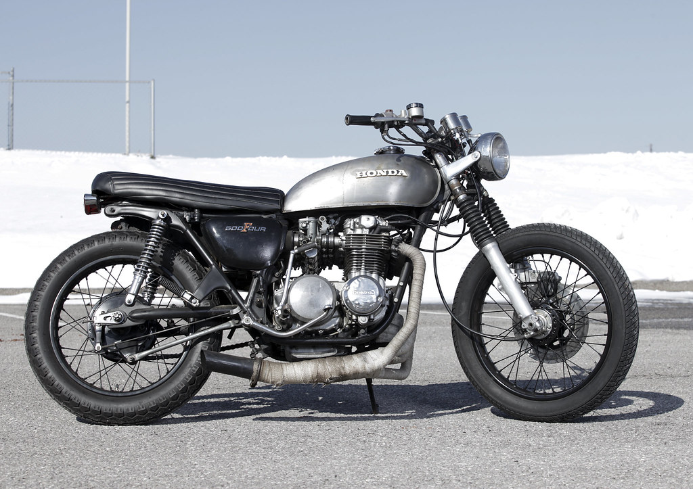

Ejemplo de Maquetación con FLEX
By Juan Miguel Mena Sáez para Diseño de Interfaces WEB
Inicio
Galeria
Productos
Clientes
Sobre nosotros
Contacto
Este es el Toyota Corolla AE86 Trueno.
Este es el Toyota Supra GR.

Esta es una Honda CB500 estilo Cafe Racer.
Esta es una Yamaha SR500 estilo Cafe Racer.
Esta es una Vespino ALX.